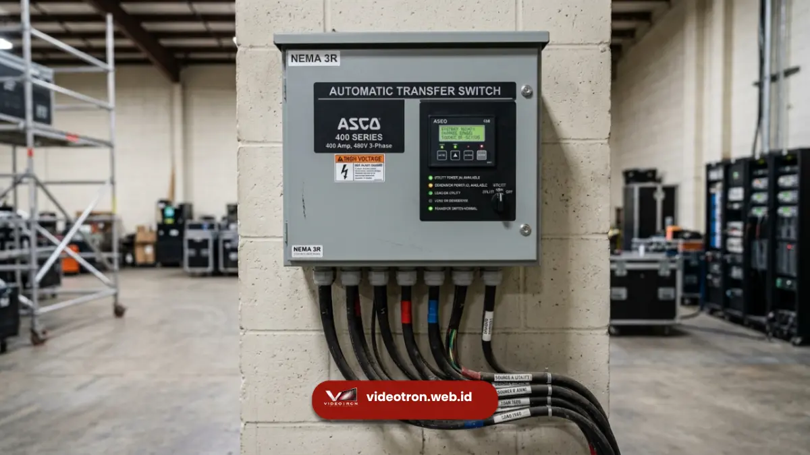

Genset untuk videotron adalah generator set yang dirancang menyuplai daya listrik khusus bagi layar LED videotron agar tayangan tidak terputus, flicker, atau padam mendadak saat acara berlangsung.
Kapasitas genset dipilih berdasarkan luas panel LED, watt per meter persegi, dan kebutuhan beban puncak. Pemasangannya wajib melalui panel ATS agar transisi daya aman.
Poin Penting Genset Videotron:
- Videotron membutuhkan pasokan daya yang stabil karena setiap modul LED sangat sensitif terhadap fluktuasi tegangan.
- Kapasitas genset dihitung dari total watt panel videotron ditambah margin aman 20-30 persen.
- Genset silent lebih disarankan untuk acara indoor maupun event dengan audiens dekat panggung.
- Kesalahan pemilihan genset berisiko membuat layar videotron mati mendadak di tengah presentasi atau konser.
- Layanan genset untuk videotron sebaiknya dipesan satu paket dengan penyewaan unit videotron agar kompatibilitas daya terjamin.
Ketika sebuah brand menyewa videotron untuk product launching, konser, atau acara korporat, sorotan utama biasanya jatuh pada resolusi gambar dan ukuran layar. Padahal, ada satu komponen yang jarang dibahas namun menentukan sukses tidaknya acara tersebut secara teknis: sumber daya listrik. Videotron adalah perangkat elektronik dengan ribuan titik LED yang bekerja serempak, dan setiap gangguan pada suplai listrik langsung terlihat di layar dalam bentuk kedipan, garis, bahkan layar padam total.
- 1. Mengapa Videotron Membutuhkan Genset Khusus?
- 2. Berapa Kapasitas Genset yang Ideal untuk Videotron?
- 3. Apa Risiko Jika Videotron Tidak Memakai Genset yang Tepat?
- 4. Jenis Genset yang Cocok untuk Videotron
- 5. Faktor yang Perlu Diperhatikan Saat Memilih Genset
- 6. Kesalahan Umum dalam Penggunaan Genset untuk Videotron
Mengapa Videotron Membutuhkan Genset Khusus?
Videotron membutuhkan genset khusus karena beban listriknya bersifat fluktuatif dan sensitif terhadap ketidakstabilan tegangan, berbeda dengan peralatan elektronik pada umumnya. Panel LED menyala dan meredup ribuan kali per detik mengikuti sinyal video, sehingga arus listrik yang dibutuhkan juga berubah-ubah secara dinamis.
Kondisi ini membuat videotron rentan terhadap sumber daya yang tidak stabil. Berbeda dengan lampu atau peralatan kantor yang menerima beban konstan, panel videotron menarik arus sesuai konten yang ditampilkan. Konten dengan warna terang dan gerakan cepat menarik daya lebih besar dibanding konten gelap dan statis. Fluktuasi inilah yang membuat sumber listrik dari genset kelas industri, bukan genset rumahan, menjadi kebutuhan mutlak.
Selain faktor teknis pada panel LED, faktor lokasi acara juga berperan besar. Banyak event outdoor seperti konser, kampanye korporat, atau perayaan daerah digelar di area yang belum terjangkau instalasi listrik PLN yang memadai. Dalam situasi seperti ini, genset menjadi satu-satunya sumber daya yang bisa diandalkan untuk menjalankan videotron sepanjang acara berlangsung.
Berapa Kapasitas Genset yang Ideal untuk Videotron?
Kapasitas genset yang ideal untuk videotron ditentukan dari total daya watt seluruh panel LED ditambah margin pengaman 20-30 persen, lalu dikonversi ke satuan kVA. Perhitungan ini mempertimbangkan konsumsi daya rata-rata, bukan daya maksimum sesaat, agar genset tidak overload saat beban puncak.
Sebagai gambaran umum, videotron outdoor P4 hingga P6 berukuran menengah biasanya membutuhkan daya beberapa ratus watt per meter persegi. Semakin besar ukuran layar dan semakin rapat pixel pitch, semakin tinggi pula kebutuhan dayanya. Setelah total watt didapat, angka tersebut perlu dibagi dengan faktor daya (power factor) videotron, umumnya berkisar 0.8, untuk mendapatkan kebutuhan dalam satuan kVA.

Panel ATS memastikan transisi daya dari PLN ke genset berjalan mulus tanpa membuat videotron restart.Margin pengaman ditambahkan bukan tanpa alasan. Videotron memiliki lonjakan arus (inrush current) saat pertama kali dinyalakan, dan beban dapat naik signifikan ketika konten yang ditampilkan dominan berwarna putih atau terang. Genset yang dipilih pas-pasan tanpa margin berisiko trip atau overheat di tengah acara, yang berujung pada layar mati mendadak. Karena perhitungan ini melibatkan banyak variabel teknis, ada baiknya Anda memahami lebih dulu cara menghitung kapasitas genset videotron secara tepat, atau berkonsultasi langsung dengan penyedia layanan videotron dan genset yang sudah berpengalaman menangani berbagai skala acara.
Apa Risiko Jika Videotron Tidak Memakai Genset yang Tepat?
Risiko utama videotron tanpa genset yang tepat adalah layar padam mendadak, tampilan flicker, kerusakan modul LED, hingga citra brand yang tercoreng di depan audiens dan publik. Kegagalan daya pada momen krusial seperti sambutan pejabat atau puncak acara dapat menimbulkan kerugian yang sulit diperbaiki.
Selain risiko yang terlihat langsung di layar, ada juga risiko tersembunyi berupa kerusakan komponen internal videotron. Fluktuasi tegangan yang tidak terkontrol dapat memperpendek umur pakai modul LED dan power supply, sehingga biaya perbaikan jangka panjang justru lebih besar dibanding investasi genset yang layak sejak awal. Hal ini menegaskan bahwa kesiapan daya listrik sama pentingnya dengan kualitas gambar itu sendiri.
Jenis Genset yang Cocok untuk Videotron
Jenis genset yang cocok untuk videotron adalah genset silent dengan kapasitas sesuai perhitungan beban, dilengkapi panel ATS otomatis, dan idealnya berbahan bakar solar untuk operasional jangka panjang. Genset silent meredam kebisingan mesin sehingga tidak mengganggu jalannya acara, terutama untuk konser musik, seminar, atau acara formal indoor.
Panel ATS (Automatic Transfer Switch) berperan penting untuk memindahkan sumber daya dari listrik PLN ke genset, atau sebaliknya, tanpa jeda yang membuat videotron restart. Fitur ini krusial untuk acara yang berlangsung lama dan tidak boleh terputus, seperti live streaming atau siaran langsung. Untuk acara berskala besar dengan videotron ukuran raksasa, biasanya dibutuhkan lebih dari satu unit genset yang disusun secara paralel (genset sinkronisasi) agar total kapasitas daya mencukupi tanpa membebani satu mesin secara berlebihan. Jika Anda ingin lebih praktis, layanan sewa genset videotron satu paket dengan unit layar sudah teruji kompatibel sejak awal.
Faktor yang Perlu Diperhatikan Saat Memilih Genset untuk Videotron
Beberapa faktor krusial dalam memilih genset untuk videotron meliputi kapasitas daya, tingkat kebisingan, keandalan panel kontrol, ketersediaan bahan bakar, dan pengalaman teknisi yang menangani instalasi. Setiap faktor ini saling berkaitan dan memengaruhi kelancaran tayangan videotron sepanjang acara.
- Kapasitas daya menjadi faktor utama karena berhubungan langsung dengan stabilitas layar
- Tingkat kebisingan penting terutama untuk acara indoor atau formal yang membutuhkan suasana tenang
- Panel kontrol yang andal memastikan perpindahan sumber daya berjalan mulus tanpa membuat videotron restart
- Ketersediaan bahan bakar untuk acara berdurasi panjang wajib diperhitungkan agar genset tidak kehabisan solar di tengah acara
- Pengalaman teknisi menentukan seberapa cepat kendala teknis di lapangan dapat diselesaikan
Teknisi berpengalaman mampu membaca beban riil videotron di lapangan dan melakukan penyesuaian cepat bila terjadi kendala teknis.
Kesalahan Umum dalam Penggunaan Genset untuk Videotron
Kesalahan umum yang sering terjadi antara lain memilih kapasitas genset terlalu pas tanpa margin, mengabaikan penggunaan panel ATS, menempatkan genset terlalu jauh dari videotron sehingga rugi tegangan (voltage drop), dan tidak melakukan pengetesan beban sebelum hari-H.
Voltage drop akibat kabel yang terlalu panjang atau berdiameter kecil dapat membuat videotron menerima tegangan di bawah standar meski genset dalam kondisi normal. Kesalahan lain yang kerap luput adalah tidak menyiapkan genset cadangan untuk acara penting yang tidak boleh gagal, padahal redundansi daya adalah standar keamanan yang wajar untuk acara berskala besar.
Genset untuk videotron bukan sekadar pelengkap, melainkan fondasi teknis yang menentukan apakah tayangan videotron dapat berjalan mulus sepanjang acara. Kapasitas yang dihitung tepat, jenis genset silent dengan panel ATS, serta penanganan oleh teknisi berpengalaman adalah kombinasi yang wajib dipenuhi agar acara berjalan tanpa gangguan.
Daripada menghadapi risiko layar videotron padam di tengah momen penting, percayakan kebutuhan videotron beserta genset pendukungnya kepada videotron.web.id — tim kami membantu menghitung kapasitas daya yang sesuai kebutuhan acara Anda dan menyediakan unit videotron beserta genset yang terintegrasi dan siap pakai.

Hawa Nadira
LED Technology Consultant dan Visual Educator
Konsultan dan spesialis solusi display digital berdedikasi tinggi yang fokus membagikan panduan edukatif mengenai penerapan teknologi layar LED videotron untuk kebutuhan interior modern di Indonesia.